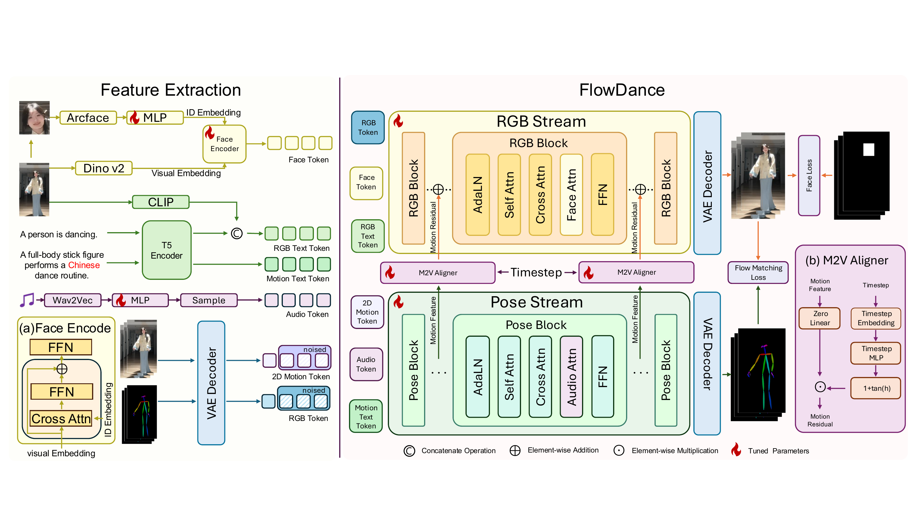

FlowDance: Music-Driven Dance Video Generation with Parallel Pose and RGB Streams
Abstract
Music-driven dance video synthesis aims to animate a reference person according to a given music clip. The task is challenging because it requires a model to jointly learn music-to-motion correspondence, identity-preserving human animation, temporal coherence, and visually realistic video generation. We present FlowDance, a parallel pose-video generation framework initialized from a pretrained video generation model. FlowDance contains a pose stream that learns music-aligned dance structures in a simplified pose-video space and an RGB stream that animates the reference image under continuous structural guidance. To support this task, we further build FlowDanceSet, a popularity-curated, high-resolution in-the-wild dance video dataset with synchronized music, RGB videos, 3D body motion, camera parameters, and projected 2D pose annotations. Extensive experiments show that FlowDance achieves strong performance in both dance motion generation and music-driven dance video synthesis.
Method

FlowDance models dance motion and visual rendering in parallel within a pretrained video diffusion backbone. The feature-extraction stage provides identity, visual, text, and audio conditioning to two coupled streams: a pose stream that predicts music-aligned 2D motion, and an RGB stream that synthesizes the target person under continuous structural guidance. Intermediate pose features guide the corresponding RGB blocks through timestep-aware M2V Aligners, so the streams remain coupled throughout denoising rather than passing motion through a one-way cascade. The figure also details the Face Encoder and M2V Aligner modules.
Face-token injection and face-masked reconstruction reinforce the appearance of the reference person, while the pose stream avoids an explicit 3D-to-2D projection step. This design separates motion planning from appearance synthesis without losing temporal and structural correspondence, enabling expressive, identity-preserving dance video generation from a reference image and music.
Result
Same Reference, Different Music
Same Music, Different Reference
Case 1
Case 2
Case 3
Long Video Generation
Comparison with Baseline Methods
Case 1
Case 2
Case 3
Ablation Study
Case 1
Case 2
Dataset
BibTeX
@article{YourPaperKey2024,
title={Your Paper Title Here},
author={First Author and Second Author and Third Author},
journal={Conference/Journal Name},
year={2024},
url={https://your-domain.com/your-project-page}
}